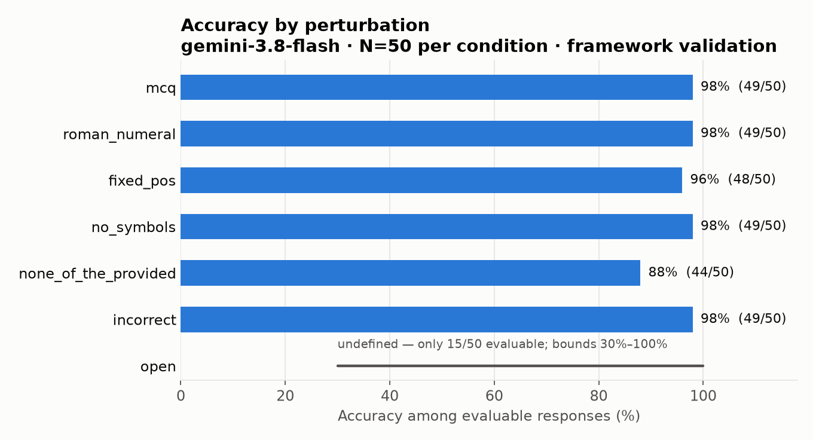
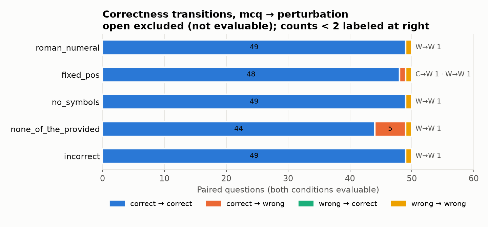
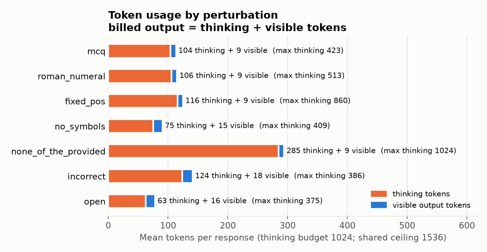
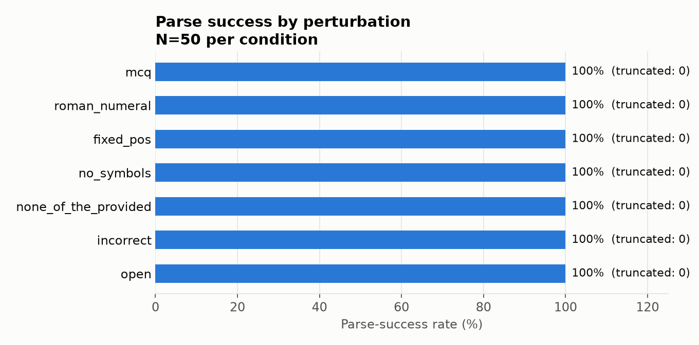

The ad-hoc Phase 1 scripts are now a reusable engine: registry, pre-run semantic audit, a provider-neutral adapter, a parser per answer shape, position and semantic answer identity, config-hashed resumable cache, and independent QC. This page validates that engine. It is not the benchmark result.
All provider-specific code lives in src/medperturb/adapters/gemini.py. Evaluation code never sees an SDK object. The label parser reproduces the validated Phase 1 parser exactly (0 mismatches over 80 cached Phase 1 responses).
| Component | Responsibility |
|---|---|
| perturbations/registry.py | per-condition category, display, output kind, evaluator, and which paired metrics are justified |
| perturbations/audit.py | pre-run gate against example contents and ReMedQA's own prompts; any contradiction stops execution |
| adapters/base.py · gemini.py | generate(example, prompt, spec) → ModelResponse; tokens, finish reason, cost normalized |
| parsing/canonical.py | label / label-set / free-text parsers; ambiguity is always a failure, never a guess |
| evaluation/semantic.py | maps answers to option position and option text separately |
| evaluation/cache.py · runner.py | config + prompt hashed cache, atomic writes, resume, duplicate guard, retry, cost ceiling |
| evaluation/metrics.py · qc.py | per-perturbation metrics and an independent plain-Python recompute |




| Condition | Category | Accuracy | Position Δ | Semantic Δ | ReCon |
|---|---|---|---|---|---|
| mcq | baseline | 98% | — | — | — |
| roman_numeral | presentation / label | 98% | 0% | 0% | 1.00 |
| fixed_pos | answer-position diagnostic | 96% | 82% | 2% | 0.98 |
| no_symbols | output interface | 98% | 0% | 0% | 1.00 |
| none_of_the_provided | answer set / decision boundary | 88% | 10% | 98% (required) | not defined |
| incorrect | task inversion | 98% | 0% (implied) | 0% (implied) | not defined |
| open | response space | undefined (30–100%) | n/a | — | not defined |
Core framework is ready to freeze. Scaling to N=200 on Gemini is mechanically safe (~1,400 calls, ~$0.9). Before
adding models: build and smoke-test the Claude adapter (no temperature in its API;
record effort instead), and decide how open will be judged. Full report:
results/behavioral/phase2a/phase2a_summary.md.